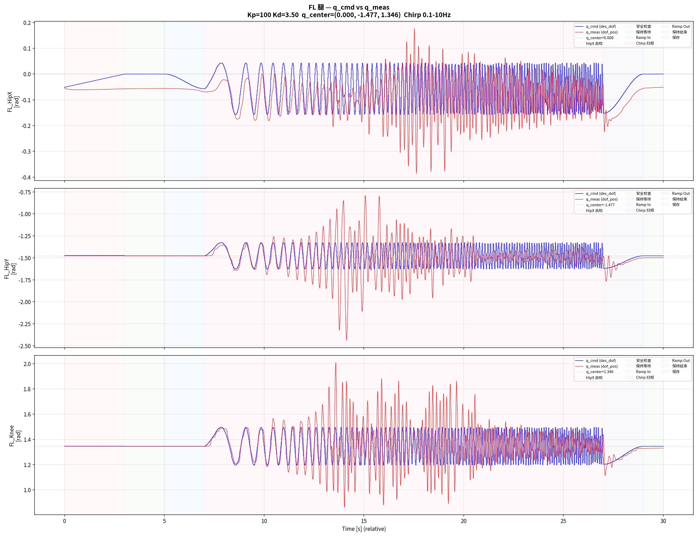

PPO policy
45-D proprioceptive observation and command input.
CORE PROJECT 02 · ETHERCAT TORQUE CONTROL
The quadruped extended the same reliability question into a heavier machine with 12 EtherCAT drives, Profile Torque mode, and a 2 kHz communication loop beneath the learned policy.
WHY THIS PROJECT MATTERED
A successful simulator rollout does not tell you which physical assumption will fail first.
I developed the software path from a learned locomotion policy to the EtherCAT hardware interface. During deployment, the central work shifted from policy training to diagnosis: model parameter error, actuator response delay, static friction, high-gain PD dynamics, and differences between the simulator’s actuation assumptions and the real drive chain.
Desired and measured joint trajectories were recorded to make that gap observable. I used those traces to revise the model/interface and add dynamics compensation before returning to hardware tests. This is the part of Sim2Real that most influenced my research direction: reliability depends on knowing whether an error came from the robot, the estimator, the action path, or the schedule.
CONTROL PATH
The rate hierarchy is explicit in the archived hardware-interface source. That hierarchy is also why delay and jitter cannot be reduced to a single fixed parameter.
45-D proprioceptive observation and command input.
Position-derived torque command with joint-specific mapping.
PDO exchange and CiA-402 drive state management.
Real actuators with delay, friction, saturation, and drive dynamics.
ω₍body₎ 3 · gravity 3 · command 3 · q 12 · dq 12 · last action 12
= 45 observations
→
12 relative joint-position targets
→ PD torque → EtherCAT drives
DIAGNOSTIC LOOP
Joint-level traces exposed lag, tracking shape, offsets, and axis-specific behavior that could not be inferred from body motion alone.
Deployment checks covered coordinate maps and signs, model parameters, static friction, actuator delay, and the lower-level PD response.
The simulator/interface was revised, compensation was added where justified, and the same signal path was returned to hardware for verification.
MEASURED JOINT EVIDENCE
The project archive includes command-versus-measurement plots and synchronized data-collection video. They are shown as diagnostic evidence, without claiming an unverified summary error metric.

WHAT THE ARCHIVE SUPPORTS
The retained source includes several training configurations and exported-model iterations. I therefore claim only the hardware behaviors documented in the CV and media—not that every archived model file is interchangeable or deployment-ready.
SUPPORTED
Source-traceable policy, PD, SOEM/PDO, and drive-state logic plus recorded hardware locomotion.
NOT CLAIMED
No invented success rate, tracking score, obstacle-clearance statistic, or latency number is presented.
The next step is to estimate the effective current state and its uncertainty from timestamped history—then let the controller adapt its action or risk level when the communication and actuation path becomes unreliable.